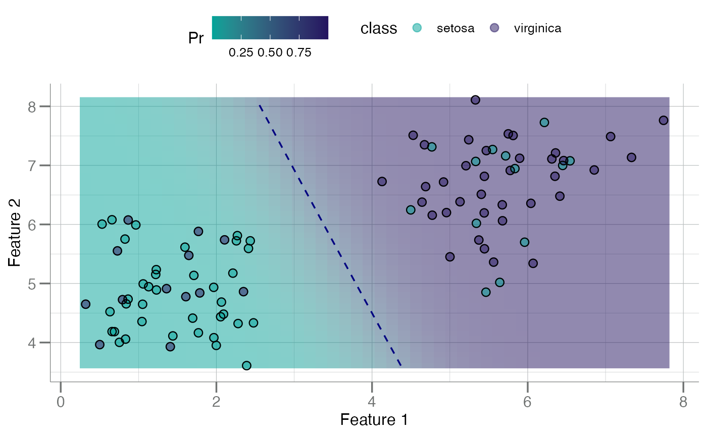

Plot a Naive Bayes Decision Boundary
plot_bayes_boundary.RdPlots the bivariate curved decision boundary for a naive Bayes classifier/model for two (bivariate) features.
Arguments
- data
A
data.frameobject containing 3 columns:F1: values for the first feature (x-axis).
F2: values for the second feature (y-axis).
class: vector of the response classes as a factor.
- pos_class
character(1). Name of the "positive" or "event" class.- res
integer(1). The resolution for the plot. Higher resolutions require more computation time.
Examples
data <- data.frame(F1 = tr_iris$Petal.Length,
F2 = tr_iris$Sepal.Length,
class = tr_iris$Species)
head(data)
#> F1 F2 class
#> 1 1.768992 4.164299 setosa
#> 2 5.467841 7.250224 virginica
#> 3 6.350273 6.815518 virginica
#> 4 5.443226 6.814336 virginica
#> 5 4.768443 7.313230 setosa
#> 6 2.256928 5.722062 setosa
plot_bayes_boundary(data, pos_class = "virginica")
